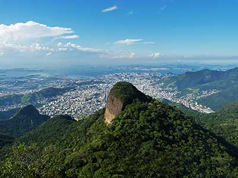

foto;

é uma estátua art deco que retrata Jesus Cristo,
localizada no morro do corcovado, a709 metros acima do nível do mar, com vista para
parte considerável da cidade do Rio de Janeiro. Feito de concreto armado e pedra-sabão,
tem 30 metros de altura sendo uma das maiores estátuas do mundo , sem contar os oito
metros de pedestal. seus braçõs esticam por 28 metros de largura e
a estrutura pesa 1145 toneladas.

Monumento natural dos morro do Pão de açucar e da Urca é uma estátua art deco
é um complexo de morros localizado no bairro da Urca, na cidade do Rio de Janeiro.
É composto pelo Morro do pão redentor, margeado pelas águas Baía de Guanabara
constitui-se em uma referência turística internacional para a cidade.

É um parque público da cidade do Rio de Janeiro,
localizado aos pés do morro do Corcovado, à rua Jardim Botânico.
Ligado à memória de nossa cidade, o espaço, na época do Brasil Colonial, era um antigo engenho de açúcar,
cujas terras se estendiam até as margens da lagoa (atual Rodrigo de Freitas).

É uma praia localizada no bairro de Copacabana, na Zona Sul da cidade do Rio de Janeiro.
É considerada uma das praias mais famosas do mundo. Limitada pela Avenida Atlântica, Copacabana é sede de eventos
de grande porte, como campeonatos mundiais de futebol de areia, campeonatos mundiais de vôlei, shows, dentre outros eventos.
O reveillon de Copacabana reúne grande público e conta com ampla queima de fogos de artifício, motivo porque
é considerado um dos maiores do mundo. Em razão da projeção internacional como cartão-postal e destino turístico,
recebeu, no decorrer dos anos, a alcunha de "princesinha do mar".
-
Os Mistérios da Pedra da Gávea foram discutidos e estudados por muitas pessoas e hoje vamos conhecer
um pouquinho mais sobre essa montanha enigmática. Fique com a gente até o final para desvendá-los.
Vista de vários ângulos da cidade do Rio de Janeiro, a Pedra da Gávea pode ser facilmente reconhecida. Tem um formato particular, que inclusive serviu de inspiração para seu nome.
Acredita-se que a Pedra da Gávea tenha sido a primeira montanha vista por marinheiros de uma expedição portuguesa, em 1502.
A princípio, a tripulação do capitão Gaspar de Lemos viu, dos barcos, uma montanha debruçada sobre o oceano atlântico, que se parecia com o cesto gávea (estrutura para observação no mastro de navios). Daí seu nome…
A posição do cesto gávea assegurava a melhor vista para que os navegantes pudessem identificar perigos que se aproximavam, outros navios e terra à vista. A olho nu ou com o uso de um monocular.
A Pedra da Gávea é composta por granito e gneisse e representa o maior monólito a beira mar no mundo. Um monólito é uma estrutura geológica, como uma montanha, formada por uma única rocha maciça.
Com seus 842 metros a Pedra da Gávea integra o Parque Nacional da Tijuca. Subir a Pedra da Gávea é um desafio imperdível para trilheiros em busca de aventura, não deixe de conhecer a trilha mais mística do Brasil e conhecer “in loco”
os pontos do percurso associados aos mistérios da Pedra da Gávea.

Encontramos em Barra de Guaratiba uma formação rochosa idêntica a uma tartaruga.
Essa formação com todo mérito é chamada de “Pedra da Tartaruga” - local onde existem
muitas vias de escalada e um rapel negativo de cima da cabeça da Tartaruga de mais de 45 metros.
Desse rapel temos uma vista panorâmica das praias selvagens da região e do mar.
O Pedra da Tartaruga não é alta, ela possui apenas 98 metros de altitude e está localizada na Serra de Guaratiba,
Zona Oeste da Cidade do Rio de Janeiro.
Este local é muito procurado pela sua beleza, pois possui belas paisagens e também por ser uma região
de praia no meio da cidade do Rio de Janeiro que ainda preserva características de uma região selvagem.
Essas praias são ideais para quem curte praia limpa, linda e quase deserta.
O visual é incrível do alto da Cabeça da Tartaruga: de lá é possível avistar as últimas praias selvagens da cidade
com a praia do Meio, Perigoso, Funda, Inferno e Búzios, e também mais ao fundo as praias de Grumari, Prainha, Abricó,
Macumba, Recreio dos Bandeirantes e Barra da Tijuca, e, se o tempo ajudar, dá até para ver o maciço da Tijuca e a Pedra da Gávea.
- 
O Pico da Tijuca é a Montanha mais alta da Floresta da Tijuca. A trilha é uma referência carioca,
localizada em meio a Mata Atlântica, uma vista privilegiada da Babilônia Maravilhosa.Com 1.021 metros de altitude, sua escadaria com 117 degraus
que dão acesso ao topo do Pico da Tijuca, para facilitar a subida foi colocada uma corrente grossa.Segundo, os historiadores essas obras foram
realizadas pelo presidente Epitácio Pessoa - no ano de 1920, para receber a visita do Rei Alberto I da Bélgica, montanhista de alma.Entretanto,
todas as modificações realizadas foram ignoradas pelo monarca, que optou subir pela pedra.Vislumbrado com a paisagem,

Feijoada é uma designação comum dada a pratos da culinária de regiões e países lusófonos como Portugal, Brasil, Angola,
Moçambique, Timor-Leste e Macau. Consiste num guisado de feijão, normalmente com carne, e quase sempre acompanhado
com arroz.
É um prato criado no Norte de Portugal e que hoje em dia constitui um dos pratos mais típicos das cozinhas portuguesas,
com as versões à transmontana, à poveira, portuguesa, dentre outras, e do Brasil, com a chamada feijoada à brasileira,
feita com feijões pretos.
-
O cachorro-quente é um sanduíche que foi exportado dos Estados Unidos, para ser melhorado nas diferentes partes do Brasil.
Cada cidade tem sua receita peculiar, geralmente concentrada nos ingredientes que são colocados com a salsicha,
no interior do pão.
Se em São Paulo, o purê de batata entra na mistura, no Rio de Janeiro, o “cachorro-quente de podrão”, como é chamado,
pode ser acompanhado de milho, ervilha, azeitona, tomate e cebola picados em um “vinagrete”, ovo cozido, batata palha,
queijo ralado, alface, bacon picado e até mesmo uva passa.

O açaí é um fruto brasileiro cultivado predominantemente na região amazônica. Com cor escura, que vai do roxo ao preto,
o fruto arredondado nasce em cachos e, na maioria das vezes, em locais com solos mais úmidos ou alagados.
Mesmo sendo um fruto característico da Região Norte do país, o açaí se popularizou nacionalmente e é utilizado de diversas
formas na culinária brasileira, já que possui muitas propriedades nutricionais.

O Rio de Janeiro é uma grande cidade brasileira à beira-mar, famosa pelas praias de Copacabana e Ipanema,
pela estátua de 38 metros de altura do Cristo Redentor, no topo do Corcovado, e pelo Pão de Açúcar,
um pico de granito com teleféricos até seu cume. A cidade também é conhecida pelas grandes favelas.
O empolgante Carnaval, com carros alegóricos, fantasias extravagantes e sambistas, é considerado o maior do mundo.
Rio de Janeiro informalmente referido como Rio é um município brasileiro, capital do estado homônimo,
situado no Sudeste do país. Maior destino turístico internacional no Brasil, da América Latina
e de todo o Hemisfério Sul (em 2008), a capital fluminense é a cidade brasileira mais conhecida no exterior,
funcionando como um "espelho", ou "retrato" nacional, seja positiva ou negativamente.
É a segunda maior metrópole do Brasil (depois de São Paulo), a sexta maior da América e a trigésima quinta do mundo.
Sua população estimada pelo IBGE para 1. de julho de 2021 era de 6 775 561 habitantes.
Tem o epíteto de Cidade Maravilhosa e aquele que nela nasce é chamado de carioca.
Curiosidades do Rio de Janeiro
A maioria das escolas de samba ficam nas favelas cariocas
Que o carioca adora um carnaval não é novidade para ninguém, atraindo cerca 2,7 milhões de foliões apenas no centro,
mas uma curiosidade muito legal é que a maioria dos blocos e escolas de samba são provenientes de comunidades.
Um quarto da população do Rio de Janeiro reside em favelas, e é de la que saiu o estilo que tanto adoramos o samba.
Criado pelos antigos escravos africanos e descentes se originou o estilo que anima milhões de pessoas todos os anos.
O Rio de Janeiro tem o Céu mais Azul do mudo
O céu do Rio de Janeiro, uma imensidão azul que se transparece ao encontro do mar e da vida aos cartões postais e
paisagens deslumbrantes.
Refletido na Guanabara nos da sensação de paz, é plano de fundo da obra-prima do homem o monumental Cristo Redentor.
Certamente o que faz das praias do Rio de Janeiro tão lindas é a combinação de um céu azul e um calor maravilhoso
A oitava maior biblioteca do mundo fica no Rio de Janeiro
o Brasil tem em suas terras a oitava maior biblioteca do mundo. A fundação da mesma vem de um cenário conturbado,
mas a realização nobre é um orgulho nacional trazido por Dom João VI.
A data é 1807 a família real portuguesa precisava fugir do implacável Napoleão e suas tropas, neste momento difíceis
decisões tiveram que ser tomadas, a fuga para o Brasil.
Neste momento a fuga elaborada contava com cerca de 15 mil pessoas, dentre eles: membros da família real, criados entre
outros viajaram rumo ao Brasil em 14 Navios.
E junto a eles um tesouro inestimável, cerca de 60.000 mil livros da biblioteca real de Portugal. Chegado ao Brasil
Dom João VI logo fundou a Biblioteca Nacional.
Cidade maravilhosa cheia de encantos mil, cidade maravilhosa, coração do meu Brasil!.
Design Templated images: Unsplas (CCO)